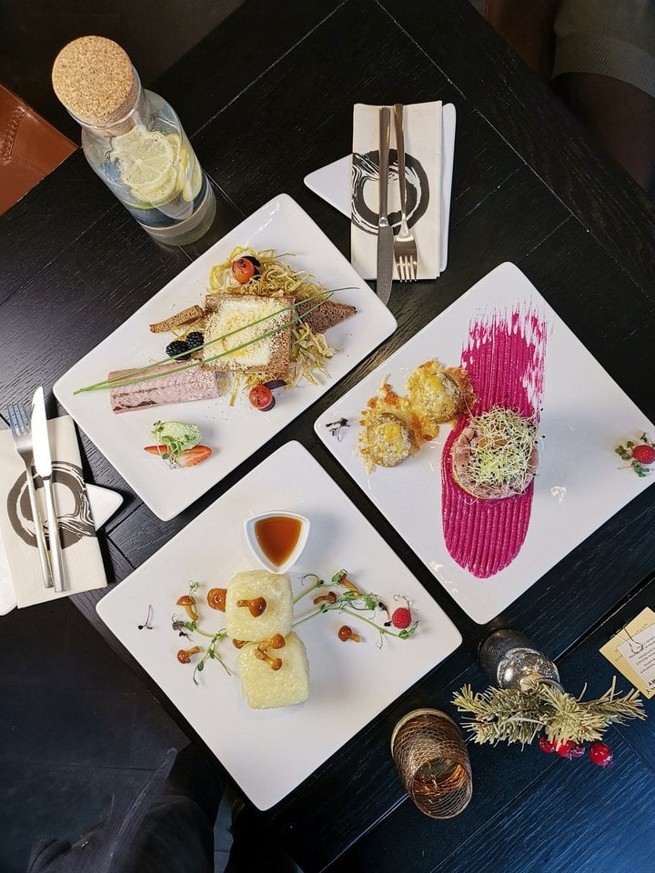

Pasižiūrėjus į didmiesčių restoranų rinką kartais ima atrodyti, kad atvežtiniai patiekalai, tokie kaip sušiai ar picos, populiarumu užgožia tradicines vietas ir neretai vieno restorano valgiaraštyje atsiranda ir kepsniai, ir itališki makaronai, ir mėsainiai, ir autentiškais vadinami „Žemaičių“ blynai.
Bet šiuo metu tarsi atsigręžiama atgal, ten, kur mūsų tikrosios šaknys ir mums artimiausi vaikystės skoniai. Kalbant apie modernią, šiuolaikišką ar naujovišką lietuvių virtuvę, viena naujesnių ir įdomesnių Vilniuje atidarytų vietų yra „Queensberry – local wine and food“. Pirmiausia, kai kalbame apie lietuvių virtuvės restoranus, neįprasta, kad pavadinimas yra angliškas ir ši vieta vadinama vynine. Ir išimtinai lietuviško vyno vynine – siūlo per 60 skirtingų rūšių vyno iš skirtingų šalies regionų. Jį tiekiantys vyndariai kiekvienas turi savo ypatingą karališkąją uogą ir dėl to restoranas ir pavadintas „Queensberry“.
Taigi ši vieta tampa tikruoju atradimu, parodančiu, kiek mūsų šalyje yra vaisinio vyno rūšių net neturint gausaus vynuogių derliaus ir koks gali būti gardus jo poskonis kaip pagrindą naudojant braškes ir kitokias sultingas uogas, dilgėles, rabarbarus.  Šiame restorane ne tik remiamasi tradicijomis, regionų paveldu, papročiais, natūralumu, bet ir siekiama sukurti šiuolaikišką skonį. Todėl čia rasite daugybę tradicinių nacionalinių, netgi naminių patiekalų, bet su šiuolaikiniais motyvais – pavyzdžiui, aukštaitiškus triušienos suktinukus, įdarytus grybais, arba tradicinę grybienę, kuri čia atgimsta kremine baravykų sriuba su putojančiu vynu.
Labai populiarūs patiekalai duonos tematika (pavyzdžiui, juodos ruginės duonos užkandis su rūkytais unguriais ir krienais), kurią mėgsta tiek vietiniai, tiek turistai. Bet mums ypač patiko tradicinės silkės patiekimas – patiekta su rožiniais burokėlių putėsiais ji tapo madingu kapotiniu, turinčiu itin mums artimą skonį ir daug spalvų, dėl kurių šis patiekalas sužaidžia nauja nata.
Restorano savininkai ilgą laiką yra lietuviško maisto ir gėrimų versle ir mato, kad klientai nuolat ieško naujovių ir estetika bei vizualinis pateikimas tampa vis svarbesnis. Viską valgome ir akimis, tad itin svarbu pirmas įspūdis vos pamačius maistą. Todėl čia visi patiekalai gausiai puošiami uogomis – tai įlieja daug spalvų į ganėtinai niūrokus spalvų atžvilgiu nacionalinius patiekalus. Kas galėtų pamanyti, kad paprastas tradicinis didžkukulis, patiektas kvadratinės formos ir įdarytas morkomis, kanapių sėklomis ir marinuotais grybais, gali tapti madingu veganišku ir netgi beveik sveikuolišku patiekalu?